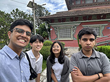
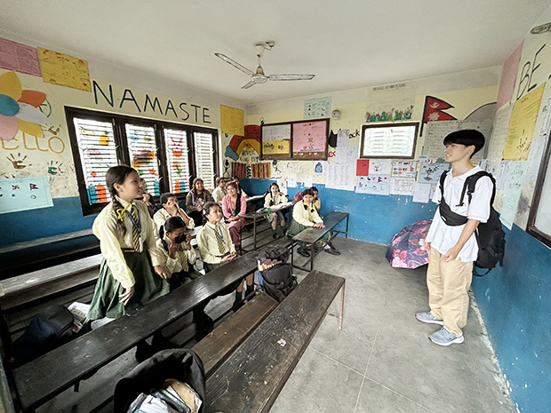
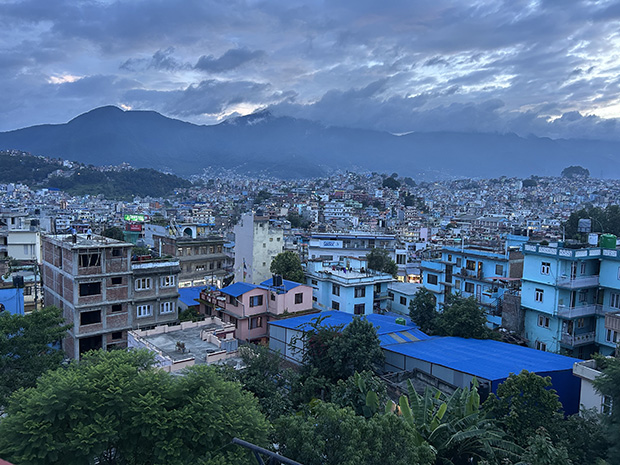
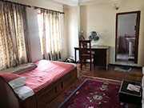

「初めての海外、しかも一人で行くのはとても不安でしたが、とても貴重な体験をすることができました。
今回ネパールに行ってみたいと思ったきっかけは、中学生の時の夏に読書感想文を書くために読んだ一冊の本でした。
吉岡大祐さんという方が書いた『ヒマラヤに学校を作る』という本を読んでいつかネパールに行ってみたい、ブンガマティ村の『クラーク記念ヒマラヤ小学校』の見学をしたいと思ったからです。
このプログラムでは、ホームステイなど貴重な経験ができそうだったから参加を決めました。
ホームステイ先は、経済学博士の方のお宅でした。
最初は食事やトイレ、お風呂など、いつもとの違いに戸惑いましたが、すぐに慣れることができました。
ホストファミリーの皆さんには、大切にしてもらい、ホームシックなどにもなりませんでした。
何もかもが新鮮で、とても貴重な経験をすることができました。
ホストファミリーの方々と家では一緒に食事をし、たくさん話し、とても大事にしてもらい、本当の家族同さまに接していただけたので、安心して過ごすことができました。
また、いろいろなところに連れていっていただき、さまざまな経験をすることができました。
とても大切にされていると感じることができました。

英語レッスンは、文法、リスニング、ライティング、スピーキング、リーティグ、どれも丁寧に教えてくださいました。
受構時間も、問題なかったです。
念願叶って訪れた『クラーク記念ヒマラヤ小学校』では、日本語教師として教壇にも立たせていただきました。
まさか、見学だけでなく、ボランティアとして参加させていただけるとは光栄でした。
ネパールに行く前は、貧しい国、治安が悪そう、怖そうなど、あまり良いイメージではありませんでした。
しかし、実際に訪れてみると、発展していて、治安も良く、会った人みんなフレンドリーで、とても印象が変わりました。
今回、初めて海外に行ったので他の国と比べることはできませんが、本当に行って良かったと思いました。
見るもの全てが珍しく日本と違う生活がとても新鮮でした。
いつかまたネパールに行きたいです。
次は、エベレストやチトワン国立公園などに行きたいです。
校長先生

今回のプログラムで英語や文化を学び、いろいろなところへ連れて行っていただき、とても充実してました。
また機会があれば利用したいです。
また、『クラーク記念ヒマラヤ小学校』に問い合わせていただき、ありがとうございました。
まさか本当に訪れることができると思っていなく、とても感動しました。
とても貴重な時間を過ごすことができました。
今回このようなプログラムに参加させていただき本当にありがとうございました。
初めての海外、しかも1人だったので、とても不安でしたが、丁寧に対応してくださったおかげでとても安心できました。
このような貴重な体験をさせていただき本当にありがとうございます。」
